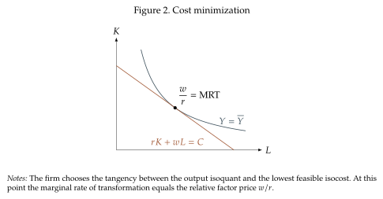

Labor and Capital as Aggregate Inputs: Substitutability¶
We start from the most standard way in which we model how labor and capital are used in production. This involves abstracting from the particularities of the workplace and what happens in it. Instead, we consider the aggregate labor amount, \(L\), and the aggregate amount of capital, \(K\), used in production. In practice this requires a way for us to measure the work hours of different types of people in a single unit. Similarly, we need to account for the presence of machines, structures, vehicles, software and other forms of capital in a single aggregate. These indexes suppress heterogeneity between people and between forms of capital in order to isolate substitution between broad factor classes.
Part of the objective of the task-based production function we develop later in the course is to separate the different types of labor and capital by distinguishing what they do and not just who they are. For now, we start with the aggregate quantities and a description of the technology that combines to create output.
The neoclassical production function¶
We start from the most general description of the production technology, embodied in the production function,
where \(Y\) is output, \(K\) is aggregate capital, \(L\) is aggregate labor, and \(z>0\) is total factor productivity. The function \(F\) describes how physical inputs become output; \(z\) measures how effective the entire production process is. Later on we will introduce factor-augmenting productivity that affects a given input directly
Formally, let \(F:\R_+^2\rightarrow\R_+\) be twice continuously differentiable and satisfy
-
Productive inputs: Holding the other input fixed, more capital or labor raises output.
\[ F_K(K,L)>0, \qquad F_L(K,L)>0. \] -
Marginal products diminish: Adding more machines or workers increases output, but ever less so.
\[ F_{KK}(K,L)<0, \qquad F_{LL}(K,L)<0. \] -
Constant returns to scale: Doubling all inputs doubles output.
\[ F(\lambda K,\lambda L)=\lambda F(K,L), \qquad \lambda>0. \] -
The production function is jointly concave. This is a technical assumption that we need to ensure convex combinations of feasible production plans remain feasible and the firm's problem is well posed.
CRS and Euler's identity
The fact that the production function has constant returns to scale has a very useful consequence that follows from Euler's Theorem: The production function can be expressed in terms of the marginal product of capital and labor.
The reason this identity is so useful is that when markets are competitive we can express output in terms of the cost of inputs. In a competitive market factors receive their marginal products, then \(\,r\,=\,pzF_K\,\) and \(\,w\,=\,pzF_L\). So, if output sells at price \(\,p\,\) we can write
Thus constant returns imply that all revenue is paid to factors according to their marginal products in competitive markets. In other words, profits are zero when the production function has constant returns to scale. So, the real question is not about profits, but about how labor and capital are remunerated. Going forward we will focus on how the firm chooses inputs, how this choice is affected by input prices, and how inputs are remunerated.
The firm's input choice¶
Even if the firm makes zero profits we can establish how it will optimally choose its inputs. We do this by solving the cost minimization problem. For this, let \(r\) be the rental price of one unit of capital and \(w\) the wage paid for one unit of labor. Suppose that the firm wants to produce \(\overline{Y}\) at the lowest possible cost. Its problem is
The Lagrangian of this problem is
The first-order conditions are
The multiplier \(\lambda\) is marginal cost: by the envelope theorem, \(\lambda\,=\,\frac{\partial C(\overline{Y},r,w)}{\partial\overline{Y}}\).
The solution is characterized by the ratio of the first two conditions, (1.7) by (1.6) yields
Under constant returns, the first-order conditions determine factor proportions but not a unique scale.
Isoquants and the marginal rate of transformation (MRT)¶
An isoquant is the set of all combinations of \(K\) and \(L\) that produce the same amount. An isoquant is the graphical representation of the constraint in the cost minimization problem (1.4). We will get to the graph in a moment, but first we stick with the mathematical derivations we have to characterize the defining property of the isoquant embodied in the marginal rate of transformation (MRT). Taking a total differential of the constraint gives
Therefore the slope of the isoquant is,
This slope is a special concept for all the topics that follow because it directly measures how much you have to exchange capital and labor to keep output constant. The concept is so important that we give it a name.
Definition 1.1: Marginal rate of transformation (MRT)
The marginal rate of transformation of labor for capital is
It is the amount of capital that can be removed when labor rises by one small unit while keeping output unchanged.
The MRT is a local concept. It answers a question about a small movement from the firm's current input mix. If \(\operatorname{MRT}_{L,K}=2\), then near that point one additional unit of labor allows the firm to use approximately two fewer units of capital without changing output. In consumer theory the analogous object is called the marginal rate of substitution (the ratio of the marginal utilities).

Equation (1.9) now has a visual interpretation. An isocost line has slope \(-w/r\) when \(K\) is on the vertical axis. At the cost-minimizing point, the isoquant has the same slope. If labor becomes more expensive relative to capital, the isocost becomes steeper and the firm moves toward a more capital-intensive technique.
Substitution between capital and labor¶
We now get to the key question in this section (and really in all of the course): How substitutable are capital and labor? This turns out to be an incredibly deep question because it really depends on how we model the way in which labor is used for production. However, we can make progress now by asking a more specialized question:
* If labor becomes 1 percent more expensive relative to capital, \ by what percentage will a firm change its capital-labor ratio? *
That might sound like a weird way to pose the question, but it really does speak to the way in which capital and labor are determined. To see it, lets return to Figure Figure 1 and see what happens when labor becomes more expensive relative to capital. This can be because wages go up, or because the cost of capital goes down. In any case, the ratio \(\frac{w}{r}\) goes up. This ratio is exactly the slope of the isocost curve, which is now steeper. So the new optimal combination of inputs involves less labor and more capital as in Figure~Figure 2. But, by how much?
The difficulty in giving a direct answer is that, while we intuitively understand that the firm will substitute labor for capital, we only know that the firm will do so while staying on the same isoquant. It does not tell us how far the firm will move along the isoquant when relative factor prices change. Two technologies can have the same MRT at the current input mix and the current input prices and very different responses to a higher wage or a cheaper machine. To distinguish them we need to measure how the MRT changes as the input mix changes.

The key to provide an answer is in the optimality conditions of the firm. Capital and labor will be always chosen so that the MRT equals the ratio of input prices \(\,\left(MRT\,=\,\frac{w}{r}\right)\) as we see in Figure Figure 2. We get this directly from (1.9). This gives you a direct link between changes in market prices and the properties of the firm production technology. A change in the relative price must be matched by a change in the marginal rate of transformation. So, we can change our question to one about the production function:
* If the MRT increases by 1 percent, by what percentage will the capital-labor ratio change? *
This question has a direct mathematical formulation, and its answer is given in terms of the elasticity of substutiton:
Definition 1.2: Elasticity of substitution
The Hicks elasticity of substitution between capital and labor is
Technology and output are held fixed; the second equality uses the firm's optimality condition \(\operatorname{MRT}\,=\,w/r\).
A small change in the MRT rotates the tangent to the isoquant; the associated change in capital to output ratio, \(k\,\equiv\,K/L\), tells us how much the technique changes. This "associated change" is the elasticity of substitution. The elasticity is a percentage response. If \(\sigma=2\), a one-percent increase in \(w/r\) leads the firm to raise \(K/L\) by approximately two percent. Labor has become more expensive relative to capital, and the firm responds strongly by using a more capital-intensive technique. If \(\sigma=0.2\), the same relative price change produces only a 0.2 percent change in \(K/L\).
* The MRT describes the technological tradeoff between capital and labor at a point. \ The elasticity of substitution describes how the chosen input ratio changes when that tradeoff---and therefore the relative factor price---changes. *
Three cases will be useful:
- If \(\sigma>1\), the input ratio responds more than proportionally. We will call capital and labor relatively easy to substitute.
- If \(\sigma=1\), the input ratio responds proportionally. This is the value generated everywhere by the Cobb--Douglas technology.
- If \(0<\sigma<1\), the input ratio responds less than proportionally. The inputs are harder to substitute than in the Cobb--Douglas benchmark.
Figure~Figure 3 contrasts two technologies: one with low elasticity, \(\sigma=\frac{1}{2}\), and one with high elasticity, \(\sigma=2\). The panels use the same change in relative prices, so their isocosts have the same slopes. The outcome is that the same relative-price change produces different substitution patterns between capital and labor.

Characterizing the elasticty under CRS
Under constant returns to scale the isoquant (and therefore the elasticity of substitution) depends only on capital per worker, \(\,k\,\equiv\,\frac{K}{L}\), not on the scale of production (the levels of \(K\) and \(L\) independently). Like in the Solow model, we can write \(\,F(K,L)\,=\,Lf(k)\), where \(\,f(k)\,\equiv\,F(k,1)\). Then
Differentiating \(m(k)=f(k)/f'(k)-k\) gives
The properties of the production function ensure that marginal products are positive and that \(f"(k)<0\). So, \(m'(k)\,>\,0\): more capital per worker makes an additional unit of labor more valuable relative to an additional unit of capital. We can then use this to get a more explicit expression for the elasticity of substitution:
If relative marginal products change sharply after a small percentage change in \(k\), a small adjustment of the input mix restores the first-order condition and \(\sigma\) is low. If they change only a little, restoring that condition requires a larger adjustment and \(\sigma\) is high.
Input shares and input responses¶
The results we just derived give us a way to see how the combination of capital and labor respond optimality to changes in market prices. But we also want to know how capital and labor respond individually. To answer this we first need to introduce the concept of the input share.
Definition 1.3: Input cost shares
The share of cost going to each input:
When the technology has constant returns to scale total cost equal revenue and we also get input shares in total revenue or income. Recall from (1.3) that \(\,pY\,=\,rK\,+\,wL\). In this case we also have \(\,\alpha_K\,+\,\alpha_L\,=\,1\).
Why do we need the input shares? The reason is that they determine how much the levels of each input respond to changes in prices together with the elasticity of substitution. To see this we start from the output constraint that defines the isoquant in (1.10). We take advantage of the fact that \(\log x\,=\,\frac{\dd x}{x}\) to write
The only issue outstanding is that we need a way to connect \(K\) and \(L\). The elasticity of substitution does that for us. From its definition and the optimality condition of the firm we write
This equation gives a link between the percentage change in capital and labor (approximated by the change in their logs). The final step is using it to get isolated expressions for the response of each input. For labor we have
These are local responses at fixed output and technology. For example, if capital's cost share is \(0.4\) and \(\sigma=0.5\), a one-percent rise in the wage with the rental price fixed reduces conditional labor demand by approximately \(0.2\) percent and raises conditional capital demand by approximately \(0.3\) percent. The ratio rises by \(0.5\) percent.
The responses depend on the input share of the other input, or in other words, on the complement input shares. The higher the input share of the input, the less scope the firm has has to substitute into it. Similarly, the larger the input share of the other inputs the more substitutability there can be.
Substitution and input shares¶
We just saw how input shares interact with the elasticity of substitution to give us the response of inputs to changes in prices. The relationship between these two concepts also lets us see how the input shares respond to changes in the economy. The key for this is noticing that the relative payments to capital and labor satisfy the accounting identity
We can use this to answer two related questions.
A price change: does substitution offset the higher price?
Suppose \(w/r\) rises. We already know that will cause the demand for capital relative to labor to increase. But, does that mean that the expenditure in capital relative to labor increases as well? Mathematically, what happens to \(\frac{rK}{wL}\)? We can use the accounting identity above, take logarithms and differentiate to obtain the answer:
Whether the relative expenditure in capital increases or not depends on the elasticity of substitution. When \(w/r\) rises there is a direct price effect in favor of labor's share, but a substitution effect toward capital. If \(\sigma<1\), quantities adjust less than prices and labor's cost share rises. If \(\sigma>1\), the quantity response dominates and labor's cost share falls. At \(\sigma=1\), the two effects exactly offset to first order. Since \(\,\frac{\alpha_K}{\alpha_L}\,=\,\frac{rK}{wL}\,\) and the shares sum to one, a higher relative capital payment also means a higher capital cost share.
An endowment change: does more capital raise capital's share?
Now consider a different experiment: an economy with a fixed, constant-returns technology, competitive factor markets, and fully employed factor supplies. Increase \(K/L\) and allow \(w/r\) to adjust to marginal products. Under constant returns to scale the ratio of capital to labor determines the MRT and the elasticity of substitution. We can therefore use the same results we have derived so far but reason in the opposite direction. We obtain
More capital per worker raises capital's income share if \(\sigma>1\), leaves it locally unchanged if \(\sigma=1\), and lowers it if \(\sigma<1\). The growing factor earns less per unit relative to the other factor; the elasticity tells us whether this relative-price decline outweighs its greater quantity. Here cost shares are also shares of output revenue because constant returns and competitive marginal-product payments imply \(rK+wL=pY\).
Historical background¶
John R. Hicks (1904--1989)¶
Hicks was a British economist who began his Oxford studies in mathematics before moving to philosophy, politics, and economics. At the London School of Economics he started with descriptive work on labor and industrial relations, then turned increasingly to economic theory. He later worked at Cambridge, Manchester, and Oxford, and shared the 1972 economics Nobel Prize with Kenneth Arrow for work on general equilibrium and welfare theory.
His work connects directly to our questions. In The Theory of Wages (1932), substitution and technical change help explain the division of income between labor and capital. As Benjamin Moll's overview shows, Hicks also helped develop compensated demand, the distinction between income and substitution effects, and the IS--LM model. These became standard tools across microeconomics and macroeconomics.
Sources: Hicks's Nobel autobiography (Nobel Lectures, Economics 1969--1980); Benjamin Moll, About John Hicks (with links to the original works).
The concept of the elasticity of substitution was introduced by John Hicks in 1932 in his book The Theory of Wages. Hicks's motivation lied in questions over the distribution of income between labor and capital and how technological change affects this distribution. His questions are not that different from the ones we have now. Hicks asked
"Is economic progress likely to raise or lower the proportion of the National Dividend which goes to labour?" Hicks (1932, p.113), Chapter VI, printed p.~113 (PDF p.~126).
He goes on to show that the answer depends on the elasticity of substition:
"An increase in the supply of any factor will increase its relative share (i.e., its proportion of the National Dividend) If its "elasticity of substitution" is greater than unity [...] The "elasticity of substitution" is a measure of the ease with which the varying factor can be substituted for others. If the same quantity of the factor is required to give a unit of the product, in any circumstances whatever, then its elasticity of substitution is zero. If all the factors employed are for practical purposes identical, so that the varying factor can be substituted for any co-operating factor without any trouble at all, then the elasticity of substitution is infinite. The case where the elasticity of substitution is unity can only be defined in words by saying that in this case (initially, before any consequential changes in the supply of other factors takes place) the increase in one factor will raise the marginal product of all other factors taken together in the same proportion as the total product is raised."
What did Hicks have in mind when he was thinking about substitutability?
"Substitution, in the sense in which we are using it, may take any of three forms:
- The change in the relative prices of the factors may lead simply to a shift over from the production of things requiring little of the increasing factor to things requiring more. > If capital increases, the commodities in whose production capital had already been used to an extent above the average will become cheaper relatively to others, and presumably, therefore, more of them will be made.
- Methods of production already known, but which did not pay previously, may come into use. > This form will include, possibly as its most important case, the mere extension of the use of instruments and methods of production from firms where they were previously employed to firms which could not previously afford them.
- The changed relative prices will stimulate the search for new methods of production which will use more of the now cheaper factor and less of the expensive one.
Partly, therefore, substitution takes place by a change in the proportions in which productive resources are distributed among existing types of production. But partly it takes place by affording a stimulus to the invention of new types. We cannot really separate, in consequence, our analysis of the effects of changes in the supply of capital and labour from our analysis of the effects of invention."
So, Hicks is also concerned by how innovation can lead to substitution between capital and labor in a way that reduces the share of labor in total income.
"[...] although an invention must increase the total Dividend, it is unlikely at the same time to increase the marginal products of all factors of production in the same ratio [...]
then we can classify inventions according as their initial effects are to increase, leave unchanged, or diminish the ratio of the marginal product of capital to that of labour.
[The] predominance of labour-saving inventions strikes one as curious. [The reason] is surely that which was hinted at in our discussion of substitution. A change in the relative prices of the factors of production is itself a spur to invention, and to invention of a particular kind-directed to economising the use of a factor which has become relatively expensive. [...] where invention is very active, the elasticity of substitution will be high and will remain high. Thus, the relative share of capital will tend to increase; and that of labour to fall."
The conclusion that Hicks arrives at in the 1930s is worrisome, even as it did not come to pass, and it echoes the worries of today as artificial intelligence is developed:
"[...] a fall in the general level of real wages is really likely to occur as the result of invention only on those rare occasions when invention breaks into a new and extensive field of industry that has long been conservative in its methods. Such "economic revolutions" always cause maladjustment, and social unrest arising from the maladjustment; but it may be useful to point out that in such times the malaise may go deeper. A fall in the equilibrium level of real wages is here a real possibility."
However, Hicks goes on to dispel some of those worries:
"But it is difficult to feel that this danger is a very pressing one today. The generalised character of technical change is a considerable safeguard against it. Inventive activity usually makes itself felt quickly enough, so that a prolonged failure to adjust technical methods to new circumstances is unlikely on a large scale. Our continuous "industrial revolution" protects us from the discontinuous revolutions of the past."
The rest of this course looks at these questions through modern techniques.